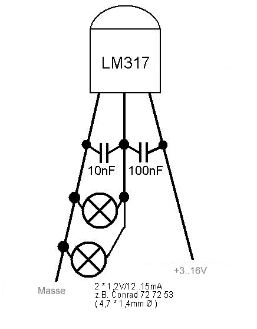

Krümelbahn
Krümelbahn
Nebenbahnsignale
Auf der Suche nach Nebenbahnsignaltafeln stellte ich fest, dass das von mir benötigte
Sortiment nur in mehreren Paketen erhältlich ist - ein erhöhter Kostenfaktor.
Deshalb habe ich die benötigten Signaltafeln für die Baugröße H0 mit einem Bildbearbeitungsprogramm
gezeichnet und auf Kartonpappe mit einem Farbdrucker ausgedruckt. Klebt man diese Schilder an
(brünierten) Messingdraht (z.B. Stärke 0,8mm) Stahlstifte, Zahnstocher o.ä., erhält man preisgünstige Signaltafeln
- auch für eine kleine Signalwerkstatt...
Durch Verkleinern/Vergrößern sind die Schilder auch für andere Spurweiten nutzbar.
(die Schilder sind ausschließlich für den Privatgebrauch, gewerbliche Nutzung ist untersagt)

Nebenbahnsignal Ne 1
eine Trapeztafel als Feierabendbastelei
erschienen in: Eisenbahn-Magazin 4/07 S.84 in der Rubrik "Tipps & Kniffe"Weiterführender Artikel:
- Miba 9/12 (Seite 22f.) Über lang, kurz oder lang - Eine mit Lichtsignalisierung ausgerüstete Trapeztafel
Nicht nur bei Modulen gibt es das Problem: wie weit darf bzw. kann der Zug fahren, ohne den zugeordneten Streckenbereich zu verlassen? Oftmals wird für diesen Punkt ein bestimmter Baum oder ein Gebäude definiert – ein Signal wäre hier besser geeignet. Doch Signale sind teuer, erst recht mit einem Antrieb.
Meine Module stellen eine typische Nebenbahn dar und sind daher mit vielen Nebenbahnsignalen versehen. Logische Konsequenz ist daher das Aufstellen einer Trapeztafel Ne1 als Ersatz für das Einfahrtsignal.
Das der DB schreibt hierzu:
;)
 Abbildung 1, Maße in mm für H0 (Klick ins Bild für eine größere Ansicht) |
Signal Ne 1 Trapeztafel Kennzeichnung der Stelle, wo bestimmte Züge vor einer Betriebsstelle zu halten haben. Eine weiße Trapeztafel mit schwarzem Rand an schwarz und weiß schräg gestreiftem Pfahl. Das Signal steht nur auf Nebenbahnen, und zwar in der Regel rechts neben dem Gleis. |
Den Auftrag zur Einfahrt in die Betriebsstelle erhält der Lokführer durch das Signal Zp11 (ein langes, ein kurzes, ein langes Signal, das entweder akustisch mit der bereits im Bahnhof stehenden Lokomotive oder durch ein Lichtzeichen gegeben wird).
Lichtzeichen? Hierzu wurde oftmals über der Trapeztafel ein Kennlicht montiert, das von der Betriebsstelle entsprechend gesteuert wird.
Manchmal steht vor der Trapeztafel (auf einem eigenen Pfosten) auch eine Pfeiftafel (Bü4).
Eine solche Trapeztafel ist leicht selbst herzustellen. Benötigt werden hierzu (Abbildung 2):

- die Trapeztafel, z.B. auf Karton gedruckt
- ein Messingrohr als Mast, 50mm lang, Außendurchmesser 1,5mm
- eine Bodenplatte (Messing ca. 10 * 10 mm)
- eine Mikroglühlampe (1,2V/15mA, Ø 1,2mm [Conrad 720120])
- eine Aderendhülse passend als Schutzrohr für die Glühlampe
- dünner Draht, der zweimal durch den Mast passen muss
- einen Vorwiderstand für die Glühlampe je nach Betriebsspannung. Dieser berechnet sich wie folgt:
R = (UAnlagenspannung – ULampe) / ILampe
z.B. R = (12 – 1,5)/0,015 = 700Ohm, nächsthöherer Normwert: 750Ohm
Aus den Erfahrungen der letzten Zeit ist eine Spannungsbegrenzung
(entgegen der Zeichnung dann mit einer anstelle von zwei Glühlampen) die bessere Alternative, meine Signale habe ich in der Zwischenzeit alle mit einem LM317 nachgerüstet.

Spannungsbegrenzung
;){kind=link}
Zunächst wird der Mast ca. 5mm vor dem oberen Ende auf einer Länge von 5mm eingefeilt, um eine Öffnung zu erhalten, durch die die beiden Drähte nach unten geführt werden können (auf Abbildung 2 zu erkennen).
Der auf Glühlampenlänge (ca. 3mm) gekürzte vordere Teil der Aderendhülse wird jetzt oben auf das Messingrohr gelötet, die Bodenplatte an das untere Ende.
Als nächstes werden die beiden Drähte durch das Messingrohr gefädelt, anschließend die Glühlampe mit einem Hauch von Sekundenkleber in die Aderendhülse geklebt.
Jetzt werden die Drähte der Glühlampe auf 3 bis 5mm Länge gekürzt und mit den durch das Messingrohr gefädelten Drähten verlötet.
Nach erfolgreich verlaufendem Leuchttest - entweder mit einer 1,5V Batterie (ohne Vorwiderstand) oder mit der Anlagenspannung (mit Vorwiderstand!) – werden jetzt Mast und Bodenplatte mit einem Pinsel lackiert (z.B. RAL 7033 zementgrau).
Als letzte Arbeit steht nach dem Trocknen der Farbe jetzt nur das Ankleben der Trapeztafel mit Mastschild am Messingrohr an. Dies geschieht am besten mit einem klitzekleinen Tropfen Sekundenkleber – aber Vorsicht: je nach Dicke des Kartons kann es geschehen, dass der Sekundenkleber den Karton aufweicht und von vorne zu sehen ist – also vorher ausprobieren!
Die kleine Feierabendbastelei ist fertigt – jetzt ist der richtige Aufstellort zu finden (Abstand zur Gleismitte 35,6mm). Der Anschluss unter der Modulplatte erfolgt über eine 2polige Lüsterklemme – Vorwiderstand nicht vergessen.

Abbildung 3
Nach Entwicklung des Merscheider Schacht bietet es sich an, auch dieses Signal mit einem Schacht auszurüsten: immer dann, wenn das Signal nicht benötigt wird, kann es einfach entfernt werden. Zudem kann ein einfacher Wechsel auf ein echtes Einfahrtsignal erfolgen.
Weitere Signale und Schaltungen sind auf verfügbar.
Weiterer interessanter Link:
Und wer sich den Selbstbau nicht zutraut:
Signaltafeln
Straßenschilder:
Preiser 18203
Weinert 3376
A.Nothaft 0161
bzw. A.Nothaft 0166
bzw. A.Nothaft 0171
Wagenwerk 6300901001BRD
(Die Auflistung erhebt keinen Anspruch auf Vollständigkeit).